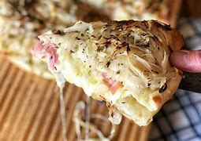

Receta Rellena de jamón y queso
Para ir preparando:
- Colocar la harina y la sal en la mesada en forma de corona. Colocar los líquidos y la levadura en el centro y amasar hasta obtener una masa lisa.
- Armar bollos de 500 y 300 g. Dejar descansar.
- Cortar las cebollas en tiras finas, colocarlas en un bowl, salarlas y cubrir con agua y hielo.
- Desgasificar los bollos levados, estirarlos y cubrir con el de 500 g una pizzera o asadera previamente aceitada.
- Rallar muzzarella y cortar en láminas el queso cuartirolo.
- Cubrir con fetas de jamón cocido, arriba los quesos, un poquito de orégano seco.
- Cubrir con la masa de 300 g y apretar bien los bordes para unirlos.
- Escurrir bien la cebolla y si es necesario secarla con un repasador y poner en la superficie.
- Cocinar en horno medio/fuerte aprox 30 minutos.
- Faltando 10 minutos agregar el queso provolone cortado en trocitos, poner el horno al máximo y gratinar.
Método de Cocción
- Colocar la harina y la sal en la mesada en forma de corona. Colocar los líquidos y la levadura en el centro y amasar hasta obtener una masa lisa.
- Armar bollos de 500 y 300 g. Dejar descansar.
- Cortar las cebollas en tiras finas, colocarlas en un bowl, salarlas y cubrir con agua y hielo.
- Desgasificar los bollos levados, estirarlos y cubrir con el de 500 g una pizzera o asadera previamente aceitada.
- Rallar muzzarella y cortar en láminas el queso cuartirolo.
- Cubrir con fetas de jamón cocido, arriba los quesos, un poquito de orégano seco.
- Cubrir con la masa de 300 g y apretar bien los bordes para unirlos.
- Escurrir bien la cebolla y si es necesario secarla con un repasador y poner en la superficie.
- Cocinar en horno medio/fuerte aprox 30 minutos.
- Faltando 10 minutos agregar el queso provolone cortado en trocitos, poner el horno al máximo y gratinar.
Podés mirar la receta original acá
Mirá también cómo hacemos nuestros famosos nugets
Volver a la lista de nuestras opciones